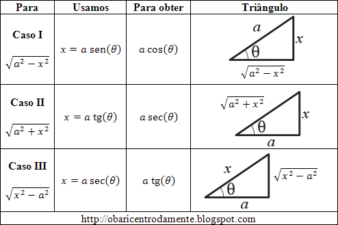

Nebula Cosmic.
A substituição trigonométrica é uma técnica de integração muito utilizada quando ocorre integrandos algébricos. Ela se baseia no fato que identidades trigonométricas muitas vezes possibilitam a substituição de um função algébrica por uma função trigonométrica, que pode ser mais facilmente integrada.
Substituições Trigonométricas para Integração
No caso de integração por substituição trigonométrica, um integrante que contenha uma das formas:
\[ \sqrt{a^2 - x^2} \quad \text{(I)} \] \[ \sqrt{a^2 + x^2} \quad \text{(II)} \] \[ \sqrt{x^2 - a^2} \quad \text{(III)} \]sendo \( a \) uma constante positiva e não tendo nenhum outro fator irracional, pode ser transformado numa integral trigonométrica mais familiar, utilizando substituições trigonométricas ou com o emprego de uma nova variável.
Para os três casos acima, utilizamos as identidades trigonométricas:
\[ 1 - sen^2(\theta) = \cos^2(\theta) \quad \text{(1)} \] \[ 1 + tg^2(\theta) = \sec^2(\theta) \quad \text{(2)} \] \[ \sec^2(\theta) - 1 = tg^2(\theta) \quad \text{(3)} \]Veja a construção: AQUI.
Com base nos resultados obtidos, podemos montar uma tabela:
Vejam que, para representar graficamente as substituições sugeridas no triângulo retângulo, o radical ficará sempre no lado do triângulo que não é utilizado pela relação trigonométrica:
- Caso I: Usa-se \( x = a sen(\theta) \); logo, o radical aparece no cateto adjacente a \( \theta \);
- Caso II: Usa-se \( a tg(\theta) \); logo, o radical aparece na hipotenusa;
- Caso III: Usa-se \( a \sec(\theta) \); logo, o radical aparece no cateto oposto a \( \theta \).